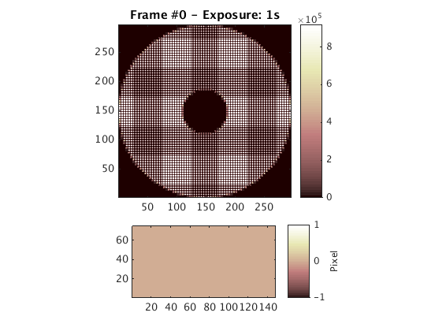
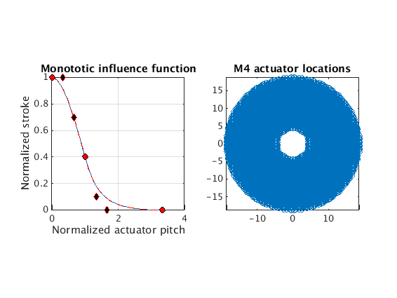
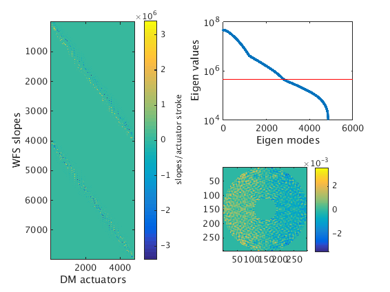
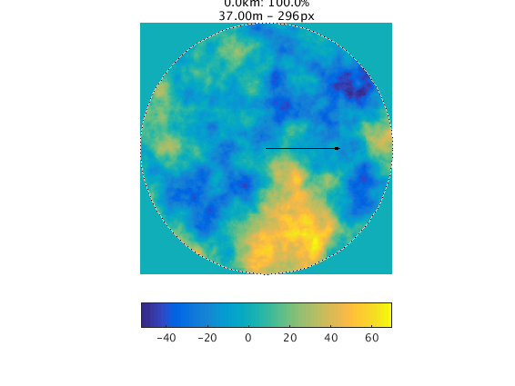
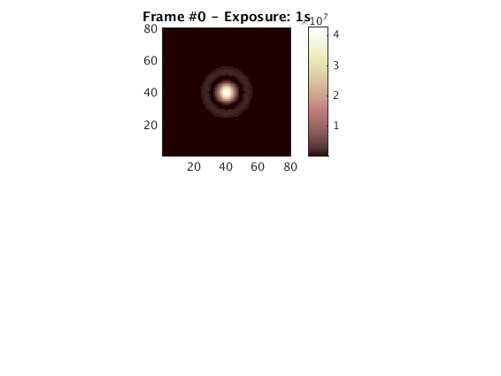
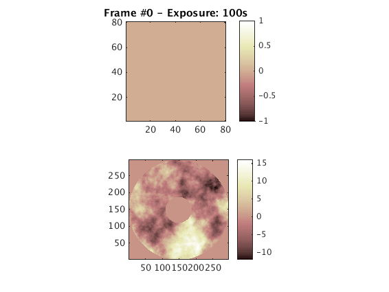
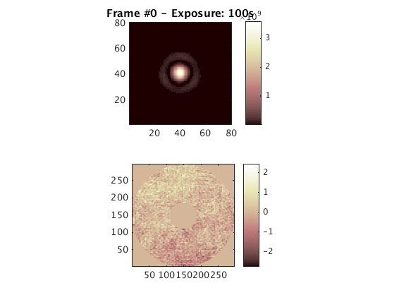
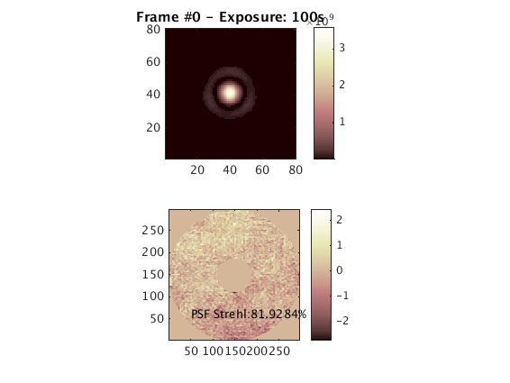
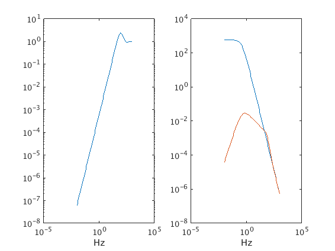
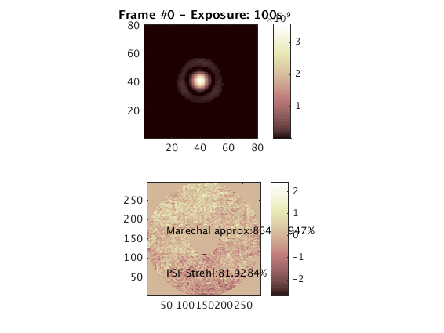

Contents
- INTRODUCTION
- LOCAL DEFINITIONS
- SOURCE
- ATMOSPHERE
- TELESCOPE
- WAVEFRONT SENSOR
- SH-WFS GAIN CALIBRATION
- DEFORMABLE MIRROR
- INTERACTION MATRIX
- CLOSED-LOOP NGS AO SYSTEM
- GENERATE ATMOSPHERE
- SCIENCE CAMERA
- STATIC AND QUASI STATIC ABERRATIONS
- SOURCE OBJECTS
- %% LOOP INIT
- CLOSED LOOP ITERATION
- PERFORMANCE ANALYSIS FROM LOOP TELEMETRY
- THEORETICAL PERFORMANCE ANALYSIS - CASE OF THE SINGLE INTEGRATOR LOOP WITH GAIN
INTRODUCTION
%{ This is the template file for the Harmoni-SCAO E2E simulation %} clear all close all
@(source)> Terminated! @(atmosphere)> Terminated! @(telescope)> Terminated! @(deformable mirror)> Terminated! @(bezier influence fun)> Terminated! @(bezier influence fun)> Terminated! @(lenslet array)> Terminated! @(detector)> Terminated! @(shack-hartmann)> Terminated! @(logBook)> Closing the log book! ~~~~~~~~~~~~~~~~~~~ OOMAO'S GONE! ~~~~~~~~~~~~~~~~~~~
LOCAL DEFINITIONS
%load('/data/HARMONI/SCAO/TESTS/ESO_PupilM1_740.mat'); %pupil = Masq_M1; clear Masq_M1; %load('/data/HARMONI/SCAO/TESTS/MAT_FI_M4_740.mat'); %load('/data/HARMONI/SCAO/SIMUL_MORGAN/MIROIR_M4/MAT_FI_M4_740.mat') % static maps %load('/data/HARMONI/SCAO/TESTS/JEFF_HSFreq_740.mat');
SOURCE
ngs = source('wavelength',photometry.R); % R-band
~~~~~~~~~~~~~~~~~~~ BEWARE OF OOMAO! ~~~~~~~~~~~~~~~~~~~ @(logBook)> Opening the log book! @(source)> Created! ___ SOURCE ___ Obj zen[arcsec] azim[deg] height[m] lambda[micron] magnitude 1 0.00 0.00 Inf 0.640 0.00 ----------------------------------------------------
ATMOSPHERE
r0 = 0.1587; % coherence lenght in meters at 0.5microns L0 = 30; % Outer scale in meters % Multi-layer atmosphere % atm = atmosphere(photometry.V0,r0,L0,... % 'fractionnalR0',[0.5,0.3,0.2],'altitude',[0e3,5e3,12e3],... % 'windSpeed',[10,5,20],'windDirection',[0,pi/2,pi]); % Mono-layer atmosphere atm = atmosphere(photometry.V0,r0,L0,... 'fractionnalR0',[1],'altitude',[0e3],... 'windSpeed',[12],'windDirection',[0]);
@(atmosphere)> Created! ___ ATMOSPHERE ___ Von Karman atmospheric turbulence . wavelength = 0.50micron, . r0 = 15.87cm, . L0 = 30.00m, . seeing = 0.64arcsec, . tau0(37%) = 7.27millisec ---------------------------------------------------- Layer Altitude[m] fr0 wind([m/s] [deg]) D[m] res[px] 1 0.00 1.00 (12.00 0.00) ----------------------------------------------------
TELESCOPE
nL = 74; % number of lenslets nPx = 4; % number of pixels per lenslet nRes = nL*nPx; % resolution on the pupil plane (no of pixels) D = 37; % telescope primary mirror diameter d = D/nL; % lenslet pitch samplingFreq = 500; % WFS sampling time obstructionRatio=0.3; % central obscuration ratio fieldOfViewInArcsec = 120; %fieldOfViewInArcsec tel = telescope(D,'resolution',nRes,... 'obstructionRatio',0.26,'fieldOfViewInArcsec',30,'samplingTime',1/samplingFreq);
@(telescope)> Created! ___ TELESCOPE ___ 37.00m diameter with a 26.00% central obstruction with 1002.53m^2 of light collecting area; the field-of-view is 0.50arcmin; the pupil is sampled with 296X296 pixels ----------------------------------------------------
WAVEFRONT SENSOR
wfs = shackHartmann(nL,nPx*nL,0.5); %0.97 % wfs INIT ngs = ngs.*tel*wfs; wfs.INIT +wfs; figure imagesc(wfs.camera,'parent',subplot(3,2,[1,4])) slopesDisplay(wfs,'parent',subplot(3,2,[5,6])) % The next 2 commands allow the displays of the frame and of the slopes to % be updated when a new frame and new slopes are computed wfs.camera.frameListener.Enabled = true; wfs.slopesListener.Enabled = true;
@(lenslet array)> Created! @(detector)> Created! @(lensletArray)> Setting the lenslet field stop size! @(lensletArray)> Set phasor (shift the intensity of half a pixel for even intensity sampling) ___ SHACK-HARTMANN ___ Shack-Hartmann wavefront sensor: . 5476 lenslets total on the pupil . 4 pixels per lenslet . spot algorithm: centroiding, no thresholding! ---------------------------------------------------- ___ LENSLET ARRAY ___ 74x74 lenslet array: . 2.0 pixels across the diffraction limited spot fwhm . 4 pixels across the square lenslet field stop size . optical throughput coefficient: 1.0 ---------------------------------------------------- ___ DETECTOR ___ 296x296 pixels camera . quantum efficiency: 1.0 . photon noise disabled . 0.0 photo-events rms read-out noise . 1000.0ms exposure time and 1.0Hz frame rate ---------------------------------------------------- @(shack-hartmann)> Created! @(source)> Computing the objective wavefront transmitance ... @(shackHartmann)> Setting the raster index Warning: Threshold (-Inf) is probably too high or simply there is no light on some of the lenslets @(shack-hartmann)> Setting the valid lenslet and the reference slopes! @(shackHartmann)> Setting the raster index
SH-WFS GAIN CALIBRATION
The WFS must be calibrated such as for 1rd of tip--tilt wavefront , it will measured a slopes of 1rd. whereas the source is progressively moved off-axis
wfs.pointingDirection = zeros(2,1); pixelScale = ngs.wavelength/... (2*d*wfs.lenslets.nyquistSampling); tipStep = pixelScale/2; nStep = floor(nPx/3)*2; sx = zeros(1,nStep+1); u = 0:nStep; wfs.camera.frameListener.Enabled = false; wfs.slopesListener.Enabled = false; warning('off','oomao:shackHartmann:relay') for kStep=u ngs.zenith = -tipStep*kStep; +ngs; drawnow sx(kStep+1) = median(wfs.slopes(1:end/2)); end warning('on','oomao:shackHartmann:relay') Ox_in = u*tipStep*constants.radian2arcsec; Ox_out = sx*ngs.wavelength/d/2*constants.radian2arcsec; %figure %plot(Ox_in,Ox_out) %grid slopesLinCoef = polyfit(Ox_in,Ox_out,1); wfs.slopesUnits = 1/slopesLinCoef(1); % The source is reset on--axis and the WFS is set to always be aligned to % the source by setting \oop{shackHartmann}{pointingDirection} to empty. ngs.zenith = 0; wfs.pointingDirection = [];
DEFORMABLE MIRROR
couplingCoeff = 0.4; % CASE 1: Fried topology (Certesian regular grid) bifa = influenceFunction('monotonic',couplingCoeff); dm = deformableMirror(nL+1,'modes',bifa,... 'resolution',tel.resolution,... 'validActuator',wfs.validActuator); % CASE 2: M4 actuator locations bifM4 = influenceFunction('monotonic',couplingCoeff); m4 = load('../_inputData/Coord_RepHexa'); pitch = 31.5e-3*2; bifM4.actuatorCoord = (m4.Centres_Act(:,1) + 1j*m4.Centres_Act(:,2))/pitch; dm = deformableMirror(m4.nb_act,'modes',bifM4,'resolution',tel.resolution,... 'validActuator',true(1,m4.nb_act)); figure,show(bifM4,'parent',subplot(1,2,1)) axis square title('Monototic influence function')% The markers in the figures correspond to, from left to right, the points $P_k$ from $k=0$ to 6. subplot(1,2,2) scatter(m4.Centres_Act(:,1)/pitch, m4.Centres_Act(:,2)/pitch) title('M4 actuator locations') axis tight square box on
@(bezier influence fun)> Created! @(influenceFunction)> Computing the 2D DM zonal modes... (4184, 4184 @(deformable mirror)> Created! ___ DEFORMABLE MIRROR ___ 75X75 actuators deformable mirror: . 4184 controlled actuators ---------------------------------------------------- ___ BEZIER INFLUENCE FUN ___ . mechanical coupling: 0.4 ---------------------------------------------------- @(bezier influence fun)> Created! @(bezier influence fun)> Expected non-zeros: 13651740 @(bezier influence fun)> Computing the 4860 2D DM zonal modes... @(influenceFunction)> Computing the 2D DM zonal modes... (4860,4860 @(bezier influence fun)> Actual non-zeros: 12874152 @(deformable mirror)> Created! ___ DEFORMABLE MIRROR ___ 4860X4860 actuators deformable mirror: . 4860 controlled actuators ---------------------------------------------------- ___ BEZIER INFLUENCE FUN ___ . mechanical coupling: 0.4 ---------------------------------------------------- @(deformable mirror)> Terminated!
INTERACTION MATRIX
Switch off the display automatic update
wfs.camera.frameListener.Enabled = false; wfs.slopesListener.Enabled = false; % Setup the optical path before the DM/WFS subsystem ngs = ngs.*tel; calibDm = calibration(dm,wfs,ngs,ngs.wavelength/8,nL+1,'cond',1e2);
@(shackHartmann)> Setting the raster index @(shackHartmann)> Setting the raster index __ Poke Matrix Stats ___ . computing time: 121.64s . size: 7992x4860 . non zeros values: 1624400 i.e. 4.18% . min. and max. values: [ 0.27,-0.27] . mean and median of absolute values: [ 0.03, 0.00] ________________________ @(calibration vault)> Created! @(calibration vault)> Computing the SVD of the calibration matrix! @(calibration vault)> Updating the command matrix! @(calibration vault)> Condition number 99.841 @(calibration vault)> Condition number 99.841
CLOSED-LOOP NGS AO SYSTEM
GENERATE ATMOSPHERE
tel = tel + atm; figure imagesc(tel) ngs = ngs.*tel*wfs;
@(telescope)> Initializing phase screens making parameters:
Layer 1:
-> Computing initial phase screen (D=37.00m,n=296px) ... Done
-> # of elements for the outer maks: 1188 and for the inner mask 2352
-> Computing matrix A and B for layer 1: ZZt , ZXt , XXt ... Done
@(shackHartmann)> Setting the raster index
 SCIENCE CAMERA
science = source('wavelength',photometry.K); cam = imager(); % tel = tel - atm; science = science.*tel*cam; figure(31416) imagesc(cam,'parent',subplot(2,1,1)) %cam.frameListener.Enabled = true; % cam.referenceFrame = cam.frame; +science; fprintf('Strehl ratio: %4.1f\n',cam.strehl) % tel = tel + atm; +science; fprintf('Strehl ratio: %4.1f\n',cam.strehl)
@(source)> Created! ___ SOURCE ___ Obj zen[arcsec] azim[deg] height[m] lambda[micron] magnitude 1 0.00 0.00 Inf 2.179 0.00 ---------------------------------------------------- @(detector)> Created! @(lenslet array)> Created! @(source)> Computing the objective wavefront transmitance ... @(lensletArray)> Set phasor (shift the intensity of half a pixel for even intensity sampling) @(source)> Created! ___ SOURCE ___ Obj zen[arcsec] azim[deg] height[m] lambda[micron] magnitude 1 0.00 0.00 Inf 0.550 0.00 ---------------------------------------------------- @(lensletArray)> Set phasor (shift the intensity of half a pixel for even intensity sampling) @(source)> Terminated! Strehl ratio: 1.0 @(telescope)> Initializing phase screens making parameters: @(lensletArray)> Set phasor (shift the intensity of half a pixel for even intensity sampling) @(source)> Created! ___ SOURCE ___ Obj zen[arcsec] azim[deg] height[m] lambda[micron] magnitude 1 0.00 0.00 Inf 0.550 0.00 ---------------------------------------------------- @(lensletArray)> Set phasor (shift the intensity of half a pixel for even intensity sampling) @(source)> Terminated! Strehl ratio: 0.0
STATIC AND QUASI STATIC ABERRATIONS
%StaticWaveNGS = {tel.pupil;JEFF_HSFOptim*ngs.waveNumber*0}; % l'amplitude complexe {amplitude;phase} %StaticWaveSCI = {tel.pupil;JEFF_HSFOptim*science.waveNumber*0}; % l'amplitude complexe {amplitude;phase} % expected loss of performance from static aberration if dm cannot fit it %exp(-var(StaticWaveSCI{2}(tel.pupilLogical)))
SOURCE OBJECTS
tel = tel + atm; dm.coefs = zeros(dm.nValidActuator,1); ngs = source('zenith',zeros(1,1),'azimuth',zeros(1,1),'magnitude',12,'wavelength',photometry.R); %ngsCombo = ngsCombo.*tel*StaticWaveNGS*dm*wfs; ngs = ngs.*tel*dm*wfs; s = source('zenith',zeros(1,1),'azimuth',zeros(1,1),'wavelength',photometry.K); %scienceCombo = scienceCombo.*tel*StaticWaveSCI*dm*cam; science = science.*tel*dm*cam;
@(telescope)> Initializing phase screens making parameters: @(source)> Created! ___ SOURCE ___ Obj zen[arcsec] azim[deg] height[m] lambda[micron] magnitude 1 0.00 0.00 Inf 0.640 12.00 ---------------------------------------------------- @(source)> Terminated! @(source)> Computing the objective wavefront transmitance ... @(source)> Created! ___ SOURCE ___ Obj zen[arcsec] azim[deg] height[m] lambda[micron] magnitude 1 0.00 0.00 Inf 2.179 0.00 ---------------------------------------------------- @(lensletArray)> Set phasor (shift the intensity of half a pixel for even intensity sampling) @(source)> Created! ___ SOURCE ___ Obj zen[arcsec] azim[deg] height[m] lambda[micron] magnitude 1 0.00 0.00 Inf 0.550 0.00 ---------------------------------------------------- @(lensletArray)> Set phasor (shift the intensity of half a pixel for even intensity sampling) @(source)> Terminated!
%% LOOP INIT
flush(cam) cam.frame = cam.frame*0; cam.clockRate = 1; exposureTime = 100; cam.exposureTime = exposureTime; startDelay = 20; figure(31416) imagesc(cam,'parent',subplot(2,1,1)) % cam.frameListener.Enabled = true; subplot(2,1,2) h = imagesc(catMeanRmPhase(science)); axis xy equal tight colorbar
@(source)> Created! ___ SOURCE ___ Obj zen[arcsec] azim[deg] height[m] lambda[micron] magnitude 1 0.00 0.00 Inf 0.550 0.00 ---------------------------------------------------- @(source)> Terminated!
gain_cl = 0.5; dm.coefs = zeros(dm.nValidActuator,1); flush(cam) set(science,'logging',true) set(science,'phaseVar',[]) cam.startDelay = startDelay; cam.frameListener.Enabled = true; wfs.camera.photonNoise = true; wfs.camera.readOutNoise = 1; wfs.framePixelThreshold = wfs.camera.readOutNoise;
@(source)> Created! ___ SOURCE ___ Obj zen[arcsec] azim[deg] height[m] lambda[micron] magnitude 1 0.00 0.00 Inf 0.550 0.00 ---------------------------------------------------- @(source)> Terminated!
CLOSED LOOP ITERATION
The loop is closed for one full exposure of the science camera.
nIteration = startDelay + exposureTime; wfsSlopesStack = zeros(wfs.nSlope,1); for k=1:nIteration % Objects update +tel; +ngs; +science; % Closed-loop controller dm.coefs(:,1) = dm.coefs(:,1) - gain_cl*calibDm.M*wfsSlopesStack(:,1); % Display set(h,'Cdata',catMeanRmPhase(science)) drawnow wfsSlopesStack = wfs.slopes; end imagesc(cam) set(h,'Cdata',catMeanRmPhase(science))
@(lensletArray)> Set phasor (shift the intensity of half a pixel for even intensity sampling) Warning: Threshold (1.000000) is probably too high or simply there is no light on some of the lenslets @(source)> Created! ___ SOURCE ___ Obj zen[arcsec] azim[deg] height[m] lambda[micron] magnitude 1 0.00 0.00 Inf 0.550 0.00 ---------------------------------------------------- @(lensletArray)> Set phasor (shift the intensity of half a pixel for even intensity sampling) @(source)> Terminated!
PERFORMANCE ANALYSIS FROM LOOP TELEMETRY
var_wfe_lsq = reshape(science(1).phaseVar(1:nIteration*2),2,[])'; wfe_lsq = sqrt(var_wfe_lsq)/science(1).waveNumber*1e6; atm_wfe_rms = sqrt(zernikeStats.residualVariance(1,atm,tel))/ngs.waveNumber*1e6; marechalStrehl_lsq = 1e2*exp(-mean(var_wfe_lsq(startDelay:end,2))); psfStrehl = 1e2*cam.strehl text(50,60,['PSF Strehl:' num2str(psfStrehl) '%'])
@(zernike polynomials)> Created! ___ ZERNIKE POLYNOMIALS ___ . mode: 1 ---------------------------------------------------- @(source)> Created! ___ SOURCE ___ Obj zen[arcsec] azim[deg] height[m] lambda[micron] magnitude 1 0.00 0.00 Inf 0.550 0.00 ---------------------------------------------------- @(source)> Terminated! @(zernike polynomials)> Terminated! psfStrehl = 81.9284
THEORETICAL PERFORMANCE ANALYSIS - CASE OF THE SINGLE INTEGRATOR LOOP WITH GAIN
var_fit = 0.23*(d/atm.r0)^(5/3)*(atm.wavelength/science(1).wavelength)^2; var_alias = 0.07*(d/atm.r0)^(5/3)*(atm.wavelength/science(1).wavelength)^2; var_tempo = phaseStats.closedLoopVariance(atm, tel.samplingTime,0.001,gain_cl)*(atm.wavelength/science(1).wavelength)^2; marechalStrehl_lsq_theoretical = 100*exp(-var_fit-var_alias-var_tempo) figure(31416) text(50,170,['Marechal approx:' num2str(100*marechalStrehl_lsq_theoretical) '%'])
marechalStrehl_lsq_theoretical = 86.4539 